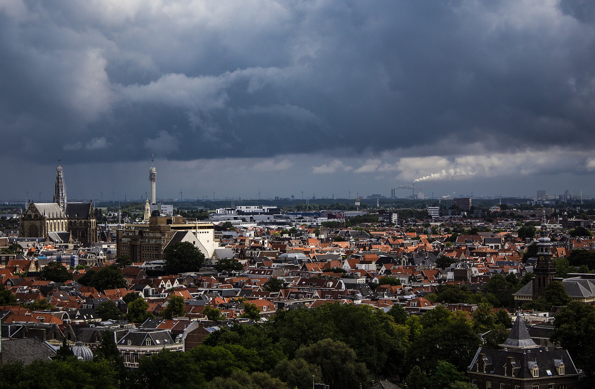
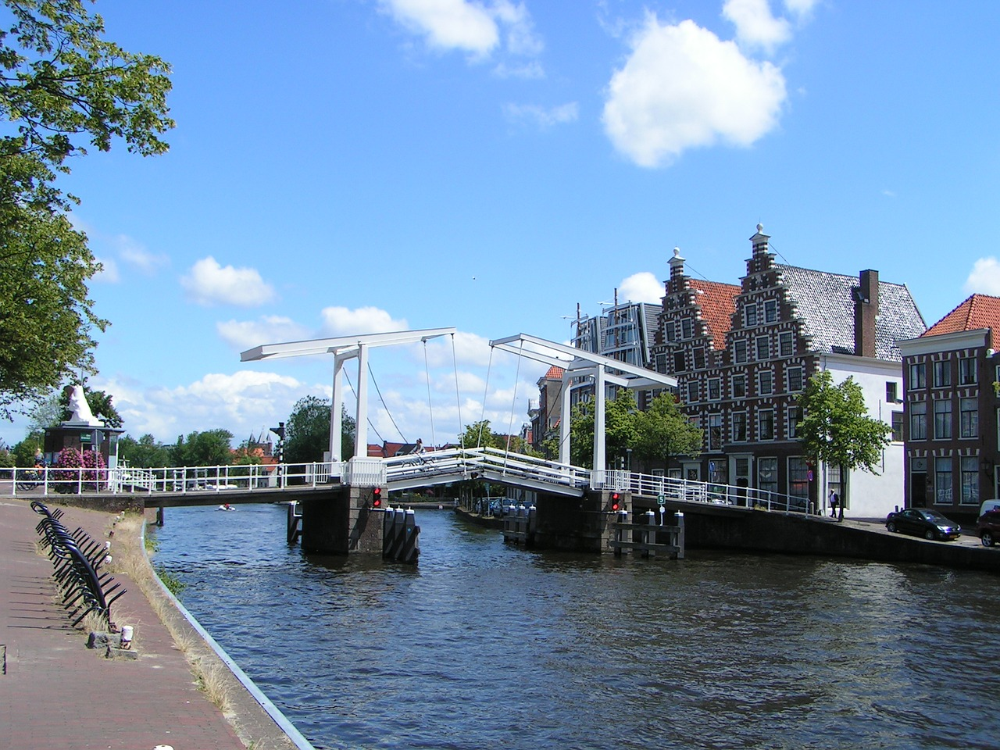
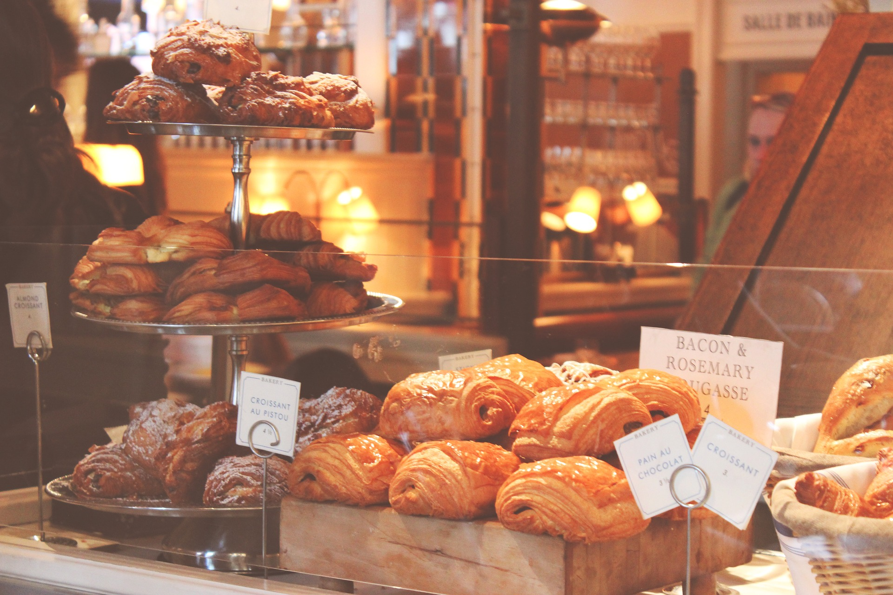

Haarlem city is located outside Amsterdam in the northwest region of Holland. It is famous as a flower growing district. International
tourists have discovered the towns many charms as the town is home to several famous painters such as Frans Hals there are many exhibits that
hold talented artists work. As the country has been voted the best shopping city in the country with their wide variety of chain boutiques, shops
and art galleries. If you are in the mood to eat after a long day of shopping the Grote Markt has a wide variety of restaurants from Italian food to
a simple burger and fries. To promote tourist to visit Haarlem every weekend in the Grote Markt there are many street market stalls that come to
sell various items, clothing and food for a reasonable price. Any dutch cuisine that you could want to try out can be found at the Grote Markt
on the weekend.


Haarlem Oosts Neighbourhood
Haarlem Oosts is located in located in the east district of haarlem that is home to many shops, companie andn Tourust Destinations. it is the
Shops
There are a total of over 25+ resturants around haarlem oosts from pappa johns pizza to a grill house.
If you are not in the mood to go out to eat there are a lot of takeaway resturants and shops that you can order from in the confort of your home.
For the pizza lovers there a papa johns pizza would keep you satisfied with their clasic and specialized pizza there are a lot of options to choose from.
For people wanting some late night food Italiaans Restaurant Sorrento offers itallian traditional dishes
that can be devlived to you or eating in their resturant.

Companies in Haarlem
There are many companies that reside in Oost one of them is MCE(Mai Car Electronics B.V.) Inbouwcenter. They are a specialist in the field of electronics,
stereo and security for your car, motorcycle, scooter, motor scooter or boat. With over 4 years of experience they can help you with any mechanical needs that
your veiche requires and provides an excellet customer serveice. If you are looking for a technical company to help make or set up a website then 4BIS Inovations
is a company that specialises in state-of-the-art web develpment, first-class cloud hosting, web hosting and full technical support. With over 6 years of experiecne
they are more than capable to help you with any problems relating to making a website. If you are lookinig to move or travel around haarlem there is a taxi company
that is based in the Oosts. De Meubeltaxi Haarlem is a taxi moving service that can prodide trucks to move all of your valuables when moving house or a car to transport you
around amsterdam and haarlem.
Tourist Destinations
There are a few tourit destinations in Oosts one of them being De Adriaan, Haarlem which is a windmill that was burnt down in 1932 and was rebuilt in 2002. The original
windmil that was made dates back to 1779 and is recognized as a part of haarlem skylight. Another landmark in Oosts is the Amsterdamse Poort which is an old city gate that is located
on a route from haarlem to amsterdam, this is one of the original 12 city gates of haarlem. There is also the Barrel Organ Museum that has a ball room where the organs can be played.
This is a self defence couse that can be taught at all ages. It helps impoves your physical condition, reaction speed, but also strenthen your mental resilieance
If you wannt to joina club that soely focuses on Taekwondo click here.
Delphis is a club that focuse on strengthing your body and mind by doing yoga and incoperating it with other
activities like boxing and weight training
Smilesport is a gym that is owned by an owner that is a world champion Europian champion in karate. They offer yoga workouts,
urban dance, kickfun workout and urban dance.
If you want to learn how to skate or do nice laps then IJsclub is the club for you. The club was founded in 1869 with the aim of
practicing and promoting skating for the yound and old.
Sport Acadamy Nauwelaerts offers many sports makes it possible for everyone to exercise.
The range of sports include katate, judo, kickboxing, yoga and Taekwondo.
This is a sports club that offers football, softball, darts and clover jackets. The club has been around for over 100 years and is
available for anyone to join. If you are interest in joing a football club they are always looking for new members to tryout nad join.